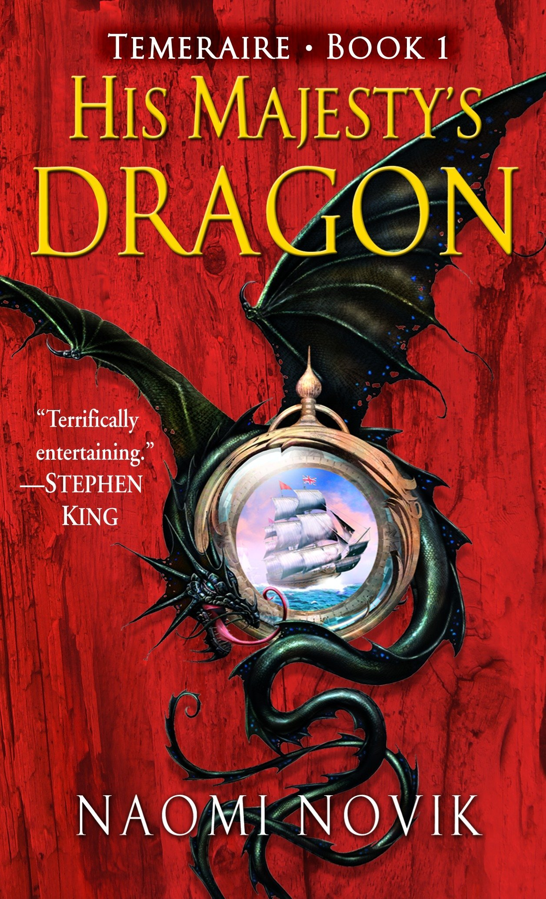

The deck of the French ship was slippery with blood, heaving in the choppy sea; a stroke might as easily bring down the man making it as the intended target. Laurence did not have time in the heat of the battle to be surprised at the degree of resistance, but even through the numbing haze of battle fever and the confusion of swords and pistol-smoke, he marked the extreme look of anguish on the French captain’s face as the man shouted encouragement to his men.
It was still there shortly thereafter, when they met on the deck, and the man surrendered his sword, very reluctantly: at the last moment his hand half-closed about the blade, as if he meant to draw it back. Laurence looked up to make certain the colors had been struck, then accepted the sword with a mute bow; he did not speak French himself, and a more formal exchange would have to wait for the presence of his third lieutenant, that young man being presently engaged belowdecks in securing the French guns. With the cessation of hostilities, the remaining Frenchmen were all virtually dropping where they stood; Laurence noticed that there were fewer of them than he would have expected for a frigate of thirty-six guns, and that they looked ill and hollow-cheeked.
Many of them lay dead or dying upon the deck; he shook his head at the waste and eyed the French captain with disapproval: the man should never have offered battle. Aside from the plain fact that the Reliant would have had the Amitié slightly outgunned and outmanned under the best of circumstances, the crew had obviously been reduced by disease or hunger. To boot, the sails above them were in a sad tangle, and that no result of the battle, but of the storm which had passed but this morning; they had barely managed to bring off a single broadside before the Reliant had closed and boarded. The captain was obviously deeply overset by the defeat, but he was not a young man to be carried away by his spirits: he ought to have done better by his men than to bring them into so hopeless an action.
“Mr. Riley,” Laurence said, catching his second lieutenant’s attention, “have our men carry the wounded below.” He hooked the captain’s sword on his belt; he did not think the man deserved the compliment of having it returned to him, though ordinarily he would have done so. “And pass the word for Mr. Wells.”
“Very good, sir,” Riley said, turning to issue the necessary orders. Laurence stepped to the railing to look down and see what damage the hull had taken. She looked reasonably intact, and he had ordered his own men to avoid shots below the waterline; he thought with satisfaction that there would be no difficulty in bringing her in to port.
His hair had slipped out of his short queue, and now fell into his eyes as he looked over. He impatiently pushed it out of the way as he turned back, leaving streaks of blood upon his forehead and the sun-bleached hair; this, with his broad shoulders and his severe look, gave him an unconsciously savage appearance as he surveyed his prize, very unlike his usual thoughtful expression.
|
Language
|
English
|
|
Genre
|
Fantasy Fiction, Alternate history, War Story
|
|
Publisher
|
Del Rey Books
|
|
Publication date
|
March 28, 2006
|
|
Pages
|
356
|
|
ISBN
|
978-0-345-48128-3 (paperback)
|
Find more information about His Majesty's Dragon
Download the Source